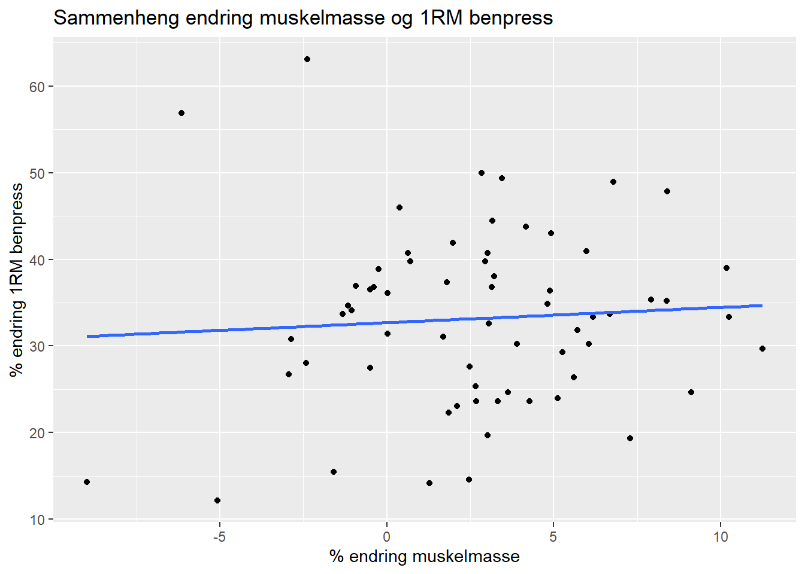

| Volum | Muskelmasse (g) | Benpress (kg) | Kneekstensjon (kg) |
|---|---|---|---|
| multiple | 8,603.5 ± 2,032.9 | 208.1 ± 76.4 | 69.2 ± 23.3 |
| single | 8,589.0 ± 2,021.0 | 217.9 ± 76.1 | 74.3 ± 25.5 |
| Data er presentert som gjennomsnitt ± standardavvik. | |||
Analysere eksperimenter med repeterte forsøk
Introduksjon
Styrketreningsprogammer består av mange variabler som i teorien kan påvirke adaptasjoner. Blant dem er volum, intensitet, frekvens, pauselengder mellom sett, ernæring, kontraksjonstype og kontraksjonshastighet. Når vi har så mange variabler vi kan manipulere er det uendelig mange måter vi kan kombinere dette for å få ulike treningsprogrammer. Når det gjelder volum er debatten rundt ett sett kontra flere sett noe som har fått oppmerksomhet (Carpinelli and Otto 1998).
Noen studier viser at større volum er gunstig for både muskelstyrke og hypertrofi (Sooneste et al. 2013; Radaelli et al. 2015). Likevel er det også noen som finner at lite volum gir økninger i styrke og masse som er tilsvarende det som oppnås ved moderat volum (Cannon and Marino 2010; Mitchell et al. 2012). Spredningen i hva studiene viser er sannsynligvis på grunn av en kombinasjon av små utvalgsstørrelser og individuelle forskjeller. Studiedesign der man sammenligner ulikt treningsvolum hos samme person kan i teorien hjelpe med å håndtere disse begrensningene. I flere av studiene som ser på ett sett versus tre sett er det også forskjell i intensitet og hvilke øvelser som er brukt (Marx et al. 2001; Messier and Dill 1985).
Formålet med analysene i denne rapporten var å sammenligne effekt av ett og flere sett på både muskelstyrke og hypertrofi. På bakgrunn i de metodiske utfordringene ved studier som sammenligner ett sett med flere sett så hypotiseres følgende: Tre sett vil være mer effektivt for å forbedre maksimal muskelstyrke og økning i muskelmasse sammenlignet med ett sett.
Metode
Forsøkspersoner og studiedesign
Førtien mannlige og kvinnelige deltakere ble rekruttert etter kriteriet om at de ikke røykte og var mellom 18-40 år. Kriterier for ikke å bli inkludert var mer enn én ukentlig styrkeøkt siste 12 måneder før intervensjon, intoleranse for bedøvelse, redusert muskelstyrke pga. skade og inntak av reseptbelagt medisin som kan påvirke treningsadaptasjoner. Syv deltakere er ekskludert fra analysene fordi de ikke fullførte minimum 85 % av oppsatt trening. Blant deltakerne som er inkludert rapporterte alle at de hadde erfaring med idrettsaktiviteter. Tjue deltakere drev med fysisk trening når de meldte seg til studien, 10 av disse drev med sporadisk styrketrening, men ingen mer enn én gang i uka.
Intervensjonen innebar 12 uker med fullkropp styrketrening, alle fullførte intervensjonen i løpet av September-November. Benøvelsene ble utført unilateralt for å tillate differensiering av treningsvolum hos samme deltaker. For hver deltaker ble beina randomisert til å utføre øvelser med enten ett eller tre sett, altså gjorde hver deltaker begge protokollene. Muskelstyrke ble samlet inn ved baseline, underveis (uke 3, 5 og 9) og etter intervensjonen, mens målinger av kroppssammensetning var før og etter intervensjonen.
Treningsprotokoll
Benøvelser ble gjennomført i følgende rekkefølge: unilateral benpress, bencurl og kneekstensjon, som ett sett på ene beinet og tre sett på andre beinet. Benet som skulle trenes i ett sett ble trent mellom andre og tredje sett på det andre benet som trente tre sett. Etter beinøvelsene trente de også to sett av bilateral benkpress, nedtrekk, og enten skulderpress eller sittende roing (skulderpress og sittende roing varierte med annenhver økt). Pauselengde mellom settene var 1.5-3 minutter. Treningsmotstanden økte gradvis utover intervensjonen, med 10RM første 2 uker, etterfølgt av 8 RM i 3 uker og 7RM i 7 uker. Etter den niende økten, ble motstanden redusert på én av de tre øktene som var hver uke. Reduseringen tilsvarte 90 % i motstand av forrige økt på den gitte øvelsen, men med mål om samme antall repetisjoner. Det var minimum 48 timer før neste økt etter styrkeøktene som var med maksimal innsats. Etter styrkeøktene med redusert motstand var det minst 24 timer til neste økt. For å sikre umiddelbar restitusjon fikk de en standardisert drikke etter hver økt med 0.15 g/kg protein, 1.2 g/kg karbohydrater og 0.5 g/kg fett.
Målinger av muskelstyrke og hypertrofi
Maksimal styrke er bestemt som den motstanden man maksimalt klarer en repetisjon av (1RM) i benpress og kneekstensjon. Før selve testen hadde de en spesifikk oppvarming med 10, 6 og 3 repetisjoner på henholdsvis 50, 75 og 85 % av forventet 1RM. Deretter ble 1RM bestemt ved å øke motstanden progressivt helt til deltakeren ikke lenger klarte å løfte gjennom hele bevegelsesbanen. Den høyeste motstanden hvor repetisjonen ble godkjent, er definert som 1RM. De fikk fire til seks forsøk hver.
Ved baseline gjennomførte de testene 2 ganger, med 4 dager mellom. Den høyeste verdien de oppnådde på disse 2 dagene er brukt i analysene. Styrketestene var minst 48 timer etter en gjennomført økt ved etter intervensjonen. Ikke alle deltakerne (n = 18) gjorde styrketestene underveis i intervensjonen (uke 2, 5 og 9). Treningen ble prioritert for resterende deltakere hvis de gikk glipp av testing eller trening pga. sykdom eller logistiske utfordringer. Derfor er ikke testene underveis inkludert i analysene for at det skulle være et større utvalg i analysene. Resultatene før og etter intervensjonen er det som er analysert.
Kroppssammensetning for bestemmelse av mager muskelmasse er bestemt ved dual-energy X-ray absorptiometry (DXA) før og etter intervensjonen (Lunar Prodigy, GE Healthcare, Oslo, Norway). Før DXA-målinger fikk deltakerne beskjed om å faste 2 timer og avstå fra krevende fysisk aktivitet i 48 timer. Det samme med minimum 48 timer fra siste styrkeøkt til test gjaldt for måling av kroppssammensetning.
Dataanalyser og statistikk
All data er presentert som gjennomsnitt ± standardavvik hvis ikke annet er oppgitt. Statiske analyser er gjort i R studio (Posit team 2023). Det er gjort enkle lineære modeller på differansen mellom gruppene (ett sett & flere sett) på endringen i styrke og muskelmasse fra før til etter intervensjonen. For maksimal styrke er det sett på øvelsene benpress og kneekstensjon. Muskelmasse er målt som endringen i mager muskelmasse i beinet som har trent ett mot beinet som har trent tre sett.
Resultater
DXA-resultatene viste at gjennomsnittlig differanse mellom ett og tre sett var 122.79 (95 % KI: [8.59-237], p = 0.04). Også for styrkeøvelsene var forbedringen i 1RM i gjennomsnitt større for det beinet som hadde trent flere sett. I beinpress var forskjellen 7.22 (95 % KI: [0.9-13.5], p = 0.026), mens for kneekstensjon var det 3.6 (95 % KI: [1.4-5.8], p = 0.002) differanse.
Tabellen nedenfor viser nivået ved baseline for styrkeøvelsene og mager muskelmasse.
Figuren viser om det er en sammenheng mellom prosentvis endring i muskelmasse og 1RM benpress. 0.4 % av endringen i 1RM benpress kan forklares med endringen i muskelmasse (R = 0.005 & p = 0.59).

Diskusjon
En feilkilde ved DXA er at nøyaktig hvor på kroppen bildet blir tatt har betydning for resultatet, små ulikheter ved de ulike tidspunktene kan påvirke.
References
Cannon, Jack, and Frank E. Marino. 2010. “Early-Phase Neuromuscular Adaptations to High- and Low-Volume Resistance Training in Untrained Young and Older Women.” Journal of Sports Sciences 28 (14): 1505–14. https://doi.org/10.1080/02640414.2010.517544.
Carpinelli, Ralph N., and Robert M. Otto. 1998. “Strength Training: Single Versus Multiple Sets.” Sports Medicine 26 (2): 73–84. https://doi.org/10.2165/00007256-199826020-00002.
Marx, James O., Nicholas A. Ratamess, Bradley C. Nindl, Lincoln A. Gotshalk, Jeff S. Volek, Keiichiro Dohi, Jill A. Bush, et al. 2001. “Low-Volume Circuit Versus High-Volume Periodized Resistance Training in Women:” Medicine and Science in Sports and Exercise, April, 635–43. https://doi.org/10.1097/00005768-200104000-00019.
Messier, Stephen P., and Mary Elizabeth Dill. 1985. “Alterations in Strength and Maximal Oxygen Uptake Consequent to Nautilus Circuit Weight Training.” Research Quarterly for Exercise and Sport 56 (4): 345–51. https://doi.org/10.1080/02701367.1985.10605339.
Mitchell, Cameron J., Tyler A. Churchward-Venne, Daniel W. D. West, Nicholas A. Burd, Leigh Breen, Steven K. Baker, and Stuart M. Phillips. 2012. “Resistance Exercise Load Does Not Determine Training-Mediated Hypertrophic Gains in Young Men.” Journal of Applied Physiology 113 (1): 71–77. https://doi.org/10.1152/japplphysiol.00307.2012.
Posit team. 2023. RStudio: Integrated Development Environment for r. Boston, MA: Posit Software, PBC. http://www.posit.co/.
Radaelli, Regis, Steven J. Fleck, Thalita Leite, Richard D. Leite, Ronei S. Pinto, Liliam Fernandes, and Roberto Simão. 2015. “Dose-Response of 1, 3, and 5 Sets of Resistance Exercise on Strength, Local Muscular Endurance, and Hypertrophy.” Journal of Strength and Conditioning Research 29 (5): 1349–58. https://doi.org/10.1519/JSC.0000000000000758.
Sooneste, Heiki, Michiya Tanimoto, Ryo Kakigi, Norio Saga, and Shizuo Katamoto. 2013. “Effects of Training Volume on Strength and Hypertrophy in Young Men.” Journal of Strength and Conditioning Research 27 (1): 8–13. https://doi.org/10.1519/JSC.0b013e3182679215.